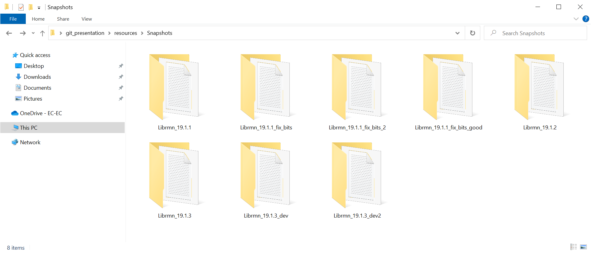
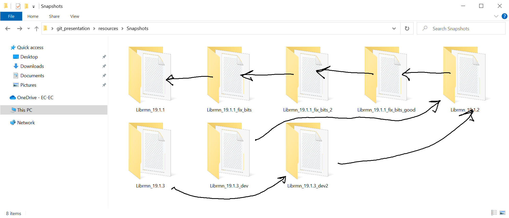
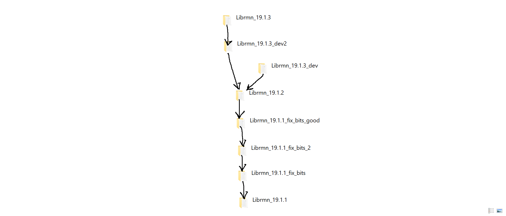

Notions fondamentales de git
1 Déroulement et objectifs
1.1 Objectif principal
Savoir ce qui se passe avec notre entrepôt git
1.1.1 Notes noexport_reveal
Dans cette présentation nous allons apprendre divers moyen de savoir ce qui se passe avec notre entrepôt git.
Étant donné une situation, une compréhension de l'état actuel de notre entrepôt git va nous permettre de trouver un moyen de régler cette situation sans se casser la tête.
1.2 Déroulement
- Notions fondamentales
- Outils pour savoir ce qui se passe
- Démonstrations live
- Discussion
1.3 Déroulement
Prise de notes : Ce document contient des notes cachées
Questions : le bon moment est quand vous vous posez la question
Flexibilité
1.3.1 Notes noexport_reveal
Nous allons commencer par une discussion des notions fondamentales de git.
Ensuite, nous allons introduire trois outils qui nous aident à visualiser l'état de notre entrepôt.
Finalement, nous allons examiner comment les opérations les plus importantes de git changent l'état de notre entrepôt.
2 Dictons
2.1 Git est facile mais …
Git est facile, mais découvrir que git est facile est difficile.
2.1.1 Notes noexport_reveal
Git est souvent une source de confusion et c'est normal. Mais comparons git à apprendre un instrument de musique.
Certainement mon inhabilité de jouer de la guitare comme Joe Satriani, ce n'est pas parce que jouer comme Joe est facile et j'ai un bloquage mental qui m'empêche de jouer comme lui.
Par contre dans git, il faut le voir comme ça. Ça demande d'une part de mettre de côté son égo. Personne n'aime être incapable de comprendre quelque chose de facile.
Le but de mon énoncé est le suivant:
Dites vous que les choses devraient être faciles, et si quelque chose vous apparaît difficile, vous venez de détecter un bloquage mental quelconque, parlez-en à votre expert de git le plus proche.
Et surtout pour la présentation: si quelque chose vous apparaît le moindrement difficile, parlez en, c'est vraiment important.
2.2 Never git pull
Hein quoi?
2.2.1 Notes noexport_reveal
La commande git pull est en fait simplement git fetch && git merge. La
commande fetch va aller chercher des commits de l'entrepôt distant que je n'ai
peut-être pas dans ma copie locale.
La commande merge fusionne deux versions du code.
Pourquoi voudrait-on fusionner des version du code dont on ne sait même pas qu'elles existent?
À la place, faisons un git fetch, ensuite, nous pouvons utiliser git logl
2.3 Never use 'And'
2.3.1 Notes noexport_reveal
Un commit devrait contenir un changement logique. Ça peut être dans plusieurs fichiers mais on devrait pouvoir décrire le changement sans utiliser le mot "ET".
3 Notions fondamentales
Passer sur chaque notion rapidement et y revenir dans la démo
3.1 Avant git
3.1.1 Un paquet de snapshots

3.1.2 On peut attacher des métadonnées aux snapshots
DEMO
3.1.3 On peut former un graphe

3.1.4 Meilleure disposition

3.1.5 Notes noexport_reveal
Cette section avait pour but d'introduire la notion de commit comme un snapshot avec des métadonnées qui contiennent entre autres une référence au snapshot duquel nous sommes parti pour créer le snapshot actuel.
3.2 Un commit
- Commit
=Snapshot + Métadonnées - Commit + référence au parent permet de voir le commit comme un changement
apporté au snapshot parent.
3.2.1 Notes noexport_reveal
Pour la prochaine discussion, nous allons voir un commit comme "Un snapshot de nos fichiers + des métadonnées (auteur, message, parent, …) identifiés par leur SHA-1"
Le dossier .git est une base de données de ces commits.
Puisqu'un commit est un snapshot + une référence à un autre snapshot, on peut lui associer un ensemble de changements en le comparant à son parent.
3.2.2 Dualité de git (Snapshots vs Changements)
Nous allons en discuter plus tard quand nous aurons un vrai graphe à regarder.
- Notes noexport_reveal
Si les commits sont des changements, je peux reconstruire un snapshot de façon non-ambigue en combinant les changements de tous les commits qui sont "reachable" à partir de celui-ci.
Si les commits sont des snapshots, je peux reconstruire les changements d'un commit en faisant un diff entre celui-ci et son parent.
Donc un commit peut-être vu comme un snapshot et comme un changement et la nuance est un détail d'implémentation de git.
3.3 Le graphe de commits
3.4 Branches
UNE BRANCHE EST UN POINTEUR SUR UN COMMIT QUI BOUGE LORS DE CERTAINES OPÉRATIONS GIT
En particulier, ce n'est pas un "Y" dans le graphe de commits.
3.4.1 Notes noexport_reveal
C'est vraiment important! Même des vétérans de git peuvent voir leur compréhension de git augmenter en changeant leur perception de c'est quoi une branche.
Pour un non-vétéran, c'est encore plus important. Le langage classique dans la documentation de git ne traite pas les branches comme des pointeurs et je crois que c'est au détriment des utilisateurs.
3.5 Remote
Ce n'est rien d'autre qu'un autre dépôt git comme le nôtre*.
On veut savoir ce qui se passe avec cet autre dépôt et comprendre le lien avec notre copie locale.
3.5.1 Notes noexport_reveal
L'asterisc est pour dire que techniquement un dépôt sur gitlab est un peu différent du dépôt.
3.6 Vocabulaire spécial
- Copie de travail (worktree)
- Le commit sur lequel je suis
- La branche courante
3.6.1 Notes noexport_reveal
La copie de travail, ce sont les fichiers de mon projet. C'est tout ce qui est
dans le dépôt excluant le contenu du dossier .git.
Quand je fais git diff git me montre la différence entre ma copie de travail
et le commit sur lequel je suis (vu comme un snapshot).
Le commit sur lequel je suis est un commit particulier. Il est indiqué par
HEAD dans la commande git log et par un point jaune dans gitk.
4 Moyens de savoir ce qui se passe
4.1 Gitk
- Les commits
- La relation parent (les linges sont des flèches qui pointent vers le bas)
- Les branches
- Le commit sur lequel on est représenté par un point jaune
- La 'branche courante' est en caractère gras
- Les changements "stagés" et "non stagés" sont représentés par un point vert et
rouge respectivement.
alias gitk='gitk --all &'
4.1.1 Notes noexport_reveal
Je prône l'utilisation de gitk pour visualiser les commits qui sont rentrés
après un git fetch mais avant un git merge.
Ces commits ne seraient pas visibles si gitk n'est pas lancé avec --all.
4.2 Commande `git logl`
- Les commits
- La relation parent (les lignes sont des flèches qui pointent vers le bas)
git config --global alias.logl 'log --oneline --graph --all'
4.2.1 Notes noexport_reveal
C'est le moyen le plus rapide pour voir le graphe de commits. On peut faire un
git fetch suivi d'un git logl, on peut lire les messages des nouveaux
commits et faire git merge si tout est beau. Si on veut voir quels
changements ces commits introduisent, on peut lancer gitk pour examiner de
plus près.
4.3 Le prompt
Démo, détails dans les notes
5 Applications
Recette: Nous allons, pour chaque opération, suivre les étapes suivantes:
- Constater l'état de l'entrepôt avant dans gitk
- Discuter quel effet la commande que nous voulons faire aura sur l'affichage de gitk
- Faire la commande
- Reloader gitk et vérifier nos prévisions.
5.0.1 Commit
Démo live
- Notes noexport_reveal
On fait des changements quelconque, ensuite on fait
git statuset on constate un fichier affiché en rouge. On note aussi que la commande peut nous direOn Branch <branch_name>.Nous pouvons voir dans
gitkun point rouge représentant les changement non-commités et non-ajoutés à l'index.Les changements en rouge dans
git statusne feront pas partie du snapshot que nous préparons. Il faut utiliser la commandegit add.Après avoir fait
git add <le_fichier>, la commandegit statusnous montre ce fichier en vert dans la section "Changes to be committed". Nous pouvons voir dansgitkun point vert représentant les changement qui feront partie du snapshot (commit) que nous allons créer.S'il y a d'autres fichiers modifiés, leurs changements ne feront pas partie du snapshot que nous allons faire.
Nous faisons un
git commit -m "bon message". Ceci crée un nouveau commit qui a comme parent le commit sur lequel nous étions. Nous pouvons aussi remarquer que la branche qui était en gras pointe sur un commit différent de celui qu'elle pointait avant que nous ayons fait notre commit.
5.0.2 Push
Démo live
- Notes noexport_reveal
Lorsque nous faisons un push, la collection de snapshots est transférée à l'autre dépôt. Ceci réussi toujours.
L'autre partie du push concerne les branches (toujours vu comme des pointeurs de commits). La commande
git push origin maindemande la chose suivante au dépôt distant:Je veux que tu fasses pointer ton pointeur
mainsur le commit qui est pointé par mon pointeurmain.Nous avons vu durant les démos subséquentes que des commits peuvent être "perdus" s'ils ne sont pas pointés par une branche ou "reachable" à partir d'un commit pointé par une branche.
Lors d'un push, si faire pointer
mainsur un autre commit rendrait des commits "unreachable", le serveur va refuser l'opération et donner un message plus ou moins utile.Dans ce cas, on fait un
git fetchet on reload notre gitk. On va pouvoir identifier ces commits.L'affichage de
gitknous montre le commit pointé par la branchemainde gitlab dans des boîtes beiges et vertes.La plûpart du temps, la marche à suivre est de faire un merge, mais ne vous gênez pas pour regarder dans gitk et décider si vous voulez faire autre chose.
5.0.3 Checkout
Démo live
- Notes noexport_reveal
Nous n'en avons pas parlé durant la discussion. Un checkout met notre copie de travail exactement comme le snapshot donné à la commande.
Si on fait un checkout en utilisant une branche, l'opération va aussi mettre cette branche comme notre "branche courante" c'est-à-dire que cette branche va bouger quand nous allons faire des commits.
Durant la démo, nous avons parlé de "Detatched head state". Cet état signifie que nous n'avons pas de branche courante.
Nous pouvons toujours faire des commits mais nous risquons de créer des commits qui seront "unreachable".
Si on veut faire un checkout d'un certain commit et faire des commits à partir de là, nous devrions créer et checkouter une branche:
git checkout 6b381dbc319 # long warning plus ou moins clair pour nous dire qu'on a pas de branche courante git branch <nouvelle branche> # Ceci crée une branche pointant sur le commit sur lequel nous sommes git checkout <nouvelle branche> # Ceci checkout le commit pointé par la branche (nous étions déjà dessus) # et la met comme branche courante et donc elle bougera avec nous # alors que nous faisons des commits <faire des commits>
Par contre c'est important de comprendre que le résultat final serait le même si on avait fait des commits en detatched head et qu'on avait créé une branche pointant sur le dernier de ces commits après les avoir faits. On a le même graphe avec les mêmes commits et les branches qui pointent aux mêmes places.
5.0.4 Fetch
Démo live
- Notes noexport_reveal
La commande
git fetchva chercher les nouveaux commits d'un dépôt distant et met à jour les branchesremotes/origin/<nom_de_branche>qui nous permettent de savoir sur quel commit pointe la branche<nom_de_branche>sur le dépôt distant.Un push n'inclu pas de fetch. Donc ça se peut qu'on fasse un push et que gitlab nous répondent "si je modifiais mon main pour qu'il pointe sur le commit pointé par ton main, ça perdrait des commits".
La première chose à faire, sans hésitation, c'est de faire un fetch pour obtenir et possiblement inspecter ces nouveaux commits dans
gitk(avec--all).
5.0.5 Merge
Démo live
- Notes noexport_reveal
Avec un
git mergegit tentera de fusionnner deux snapshots.La commande complète est
git merge <commit1> <commit2>mais si nous donnons aucun argument, git peut les déduire.Avec juste
git merge, si j'ai une branche courante, git va fusionner le commit pointé par celle-ci et le commit pointé parremotes/origin/<ma branche courante>.Si je spécifie un argument, git va fusionner le commit sur lequel je suis avec le commit passé en argument.
En réalité, git fait plus que fusionner deux snapshots. Git va trouver le premier commit qui est "reachable" à partir des deux commits à fusionner. Ce commit peut être identifié avec la commande
git merge-base <commit1> <commit2>.À partir de ce commit, git va appliquer l'ensemble des changements introduits par les commits entre le merge base et
<commit1>et les changements entre le merge-base et<commit_2>.Durant ce processus, il est possible que deux commits modifient le même endroit du même fichier et créent des conflits.
Dans ce cas, il faut faire
git statuspour identifier les fichiers qui ont des conflits.Pour chacun de ces fichiers, git nous indique où les conflits ont eu lieu.
Il est indispensable d'avoir fait un fetch et ouvert
gitkpour pouvoir déterminer comment régler ces conflits.Si deux personnes ont chacun ajouté du code qui fait la même chose, nous voulons probablement garder seulement une version.
Si deux personnes sont tous les deux allés ajouter une fonction à la fin du même fichier, possiblement que nous voulons garder les deux fonctions.
5.0.6 Rebase interactif
Maintenant que nous voyons les branches comme des pointeurs, c'est plus facile de faire un rebase interactif sans avoir peur.
Pour en savoir plus sur les rebase intéractifs, cherchez sur Google ou YouTube pour une démo. Mais gardez en tête les trucs que j'ai montré dans la démo:
- Créer une branche
__save__ - Faites votre rebase
- Faites un diff avec le snapshot pointé par
__save__ - S'il n'y a aucunes différences le rebase est un succès
- S'il y a des différences, on peut recommencer
Premièrement, créer une branche de secours pointant sur le commit sur lequel nous sommes:
git branch __save__
Ensuite, déterminer combien de commits <n> nous voulons "rebaser" et commencer le
rebase:
git rebase HEAD~<n>
La référence HEAD~n est une facon de dire Le parent du parent du parent (n
fois) de =HEAD.
Si notre éditeur est Vim, on peut faire git rebase -i HEAD~n et si on voit
qu'on n'a pas le bon range de commits, on peut quitter avec :cq. Ceci demande
à vim de retourner avec un code d'erreur non-nul. Git va voir ça et compredre
de ne pas faire le rebase.
Une fois le rebase fait on peut faire un diff avec le snapshot pointé par
__save__.
C'est possible d'avoir bien fait le rebase et d'avoir des différences. Par exemple, si un commit n'a rien fait d'autre que d'introduire des prints pour du déboguage, on pourrait vouloir exclure ces changements de la version finale en effaçant la ligne de ce commit dans le fichier "rebase-todo".
Dans ce cas là, on fait un diff avec la branche __save__ et on confirme que le
diff ne contient que des print.
6 Commandes
Les seules commandes qu'on a besoin de savoir:
6.1 À faire tout le temps:
git status
Moi j'ai l'alias git st (voir plus bas).
6.2 Faire des commits
# Voir ce qui se passe git status # Voir ce qui se passe dans les fichiers git diff # Ajouter un fichier modifié à "l'index" (le snapshot que nous sommes en train de créer) git add <un_fichier> # Enlever un fichier de l'index (snapshot que nous sommes sur le point de créer) # C'est comme faire un undo d'un add. git reset <un fichier> # Créer le nouveau snapshot git commit -m "Un excellent message de commit"
6.3 Checkout
git checkout <REF>
Sortir le snapshot désigné par <REF> (hash de commit, branche ou tag, un "ref"
dans git désigne n'importe quelle façon de spécifier un commit).
Si nous utilisons une branche, la commande va mettre cette branche comme notre branche courante et donc celle-ci va se déplacer avec nous lorsque nous faisons des commits.
Si nous utilisons un hash ou un tag, nous serons en "detatched head state" (no big deal maintenant qu'on sait ce que ça veut dire). On risque de perdre des commits si on en fait lorsque nous sommes dans cet état, mais git vas nous avertir au moment ou on les perdrait.
6.4 Fetch, Push
# Savoir ce qui se passe avec un dépôt distant (remote). git fetch
# Envoyer nos nouveaux snapshots au remote "origin" de demander # que celui-ci fasse pointer sa branche master sur le commit # pointé par ma branche master. git push origin master
6.5 Merge rebase
# fusionner deux snapshots du code en combinant deux ensembles de # changements git merge <commit>
6.6 Pull
Ne jamais faire git pull!
6.7 Gitignore
Avoir des fichiers "untracked" qui ne sont pas ignorés n'est jamais bon.
Si un fichier est untracked mais devrait l'être, on l'ajoute aux fichiers trackés en faisant un commit.
Si un fichier est untracked et devrait être ignoré, on ajoute une ligne dans le
fichier .gitignore du dépôt (on le crée s'il n'existe pas).
Le fichier .gitignore est comme n'importe quel fichier important de notre dépôt. Il
devraît être tracké et on doit donc faire un commit quand on le modifie ou si on
le crée.
7 Configurations obligatoires
Chacune des choses ici est essentielle. Mieux on connaît l'état de notre entrepôt, plus savoir comment faire ce qu'on veut faire est facile.
7.1 Gitk
Pour toujours avoir --all avec notre commande gitk et le & est pratique
pour pas que gitk bloque notre shell:
# ~/.profile.d/interactive/post alias gitk='gitk --all &'
7.2 Alias git
Pour avoir les alias git st et git logl:
~/.gitconfig [alias] + st = status + logl = log --oneline --graph --all
Ou en exécutant les commandes
git config --global alias.logl "log --oneline --graph --all"
git config --global alias.st status
Vous pouvez choisir d'autres noms mais vous devez avoir ces alias.
7.3 Prompt string
Nous utilisons le fichier git-prompt.sh qui peut être obtenu avec
wget https://raw.githubusercontent.com/git/git/master/contrib/completion/git-prompt.sh
Sourcer ce script donne la fonction __git_ps1 qui peut être utilisée pour
inclure de l'information sur notre dépôt git dans notre invite de commande.
Voici un exemple:
# wget https://raw.githubusercontent.com/git/git/master/contrib/completion/git-prompt.sh -O <your choice> source ~/.git-prompt.sh configure_prompt_command_basic(){ # From the `man bash` # PROMPT_COMMAND # If set, the value is executed as a command prior to issuing each primary prompt. GIT_PS1_SHOWUNTRACKEDFILES=true GIT_PS1_SHOWUPSTREAM=verbose GIT_PS1_SHOWCOLORHINTS=true GIT_PS1_SHOWDIRTYSTATE=true PROMPT_COMMAND='__git_ps1 "[\u@\h \w" "] \$ "' } configure_prompt_command ################################ END BASIC PART function my_git_ps1_color(){ # See documentation at the top of git-prompt.sh: # Calling __git_ps1 with arguments causes it to act by setting PS1 local color="\[\033[35m\]" local reset="\[\033[0m\]" local pre="${color}[\u@\h \w${reset}" local post="${color}] \$ ${reset}" # This call to __git_ps1 __git_ps1 "${pre}" "${post}" # will set PS1: PS1=${pre}${git_stuff}${post} # And then PS1 will be evaluated as normal. } # See ~phc001/.simple_git_ps1_example.sh for a cool prompt string